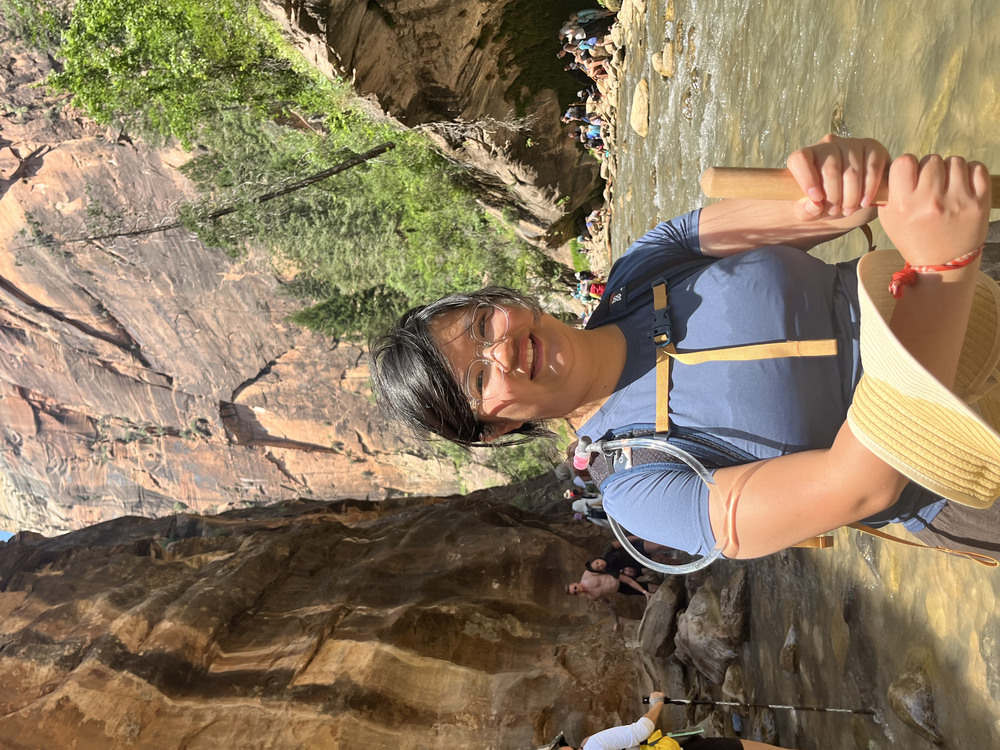
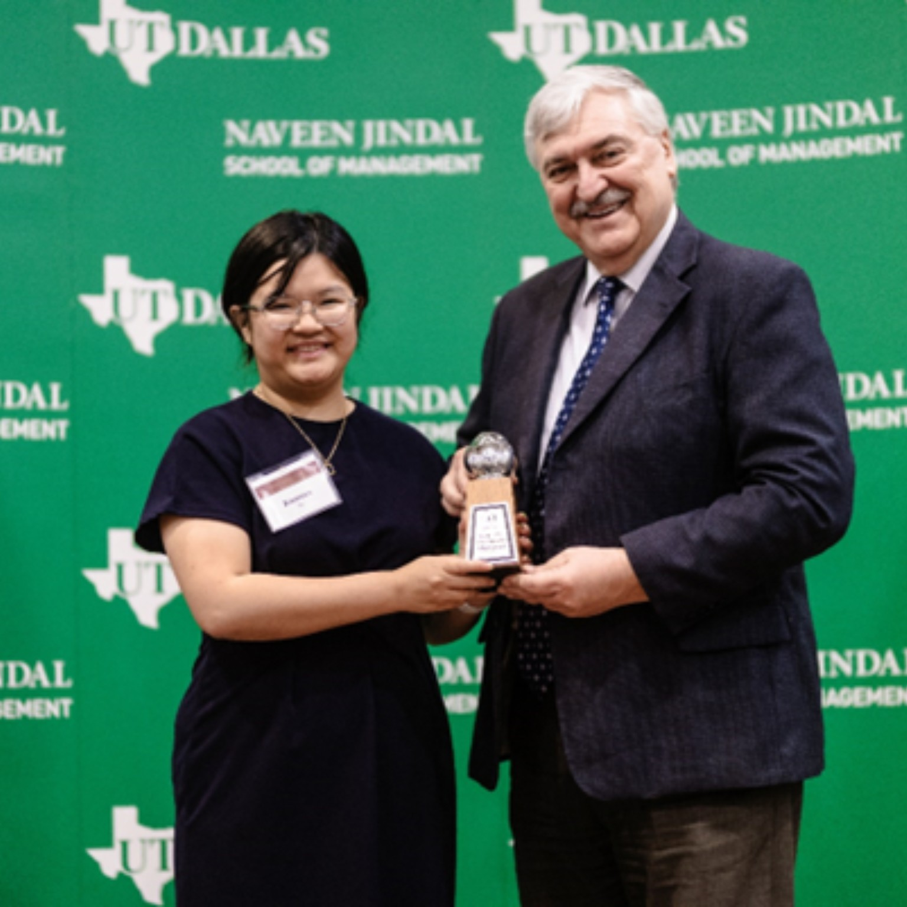
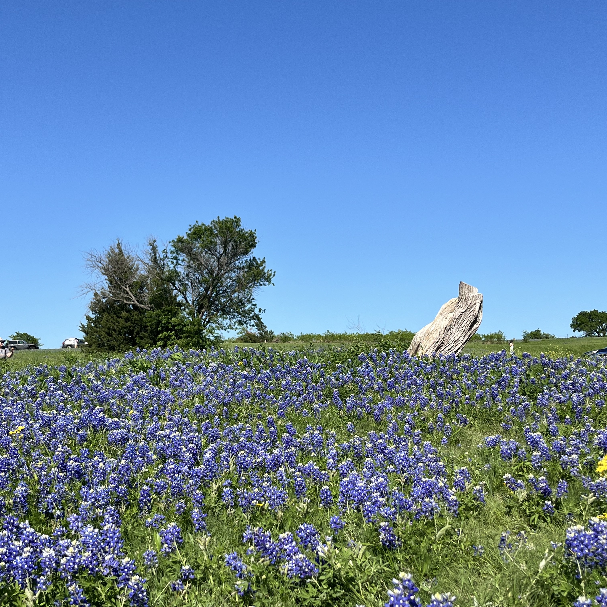
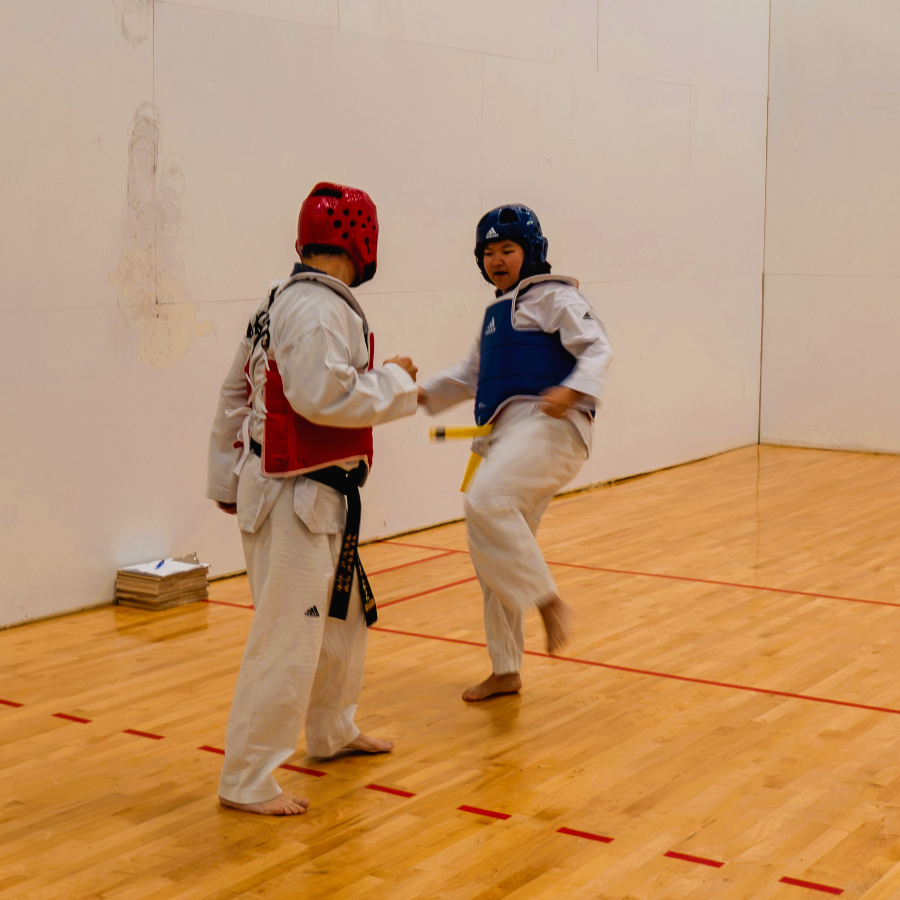
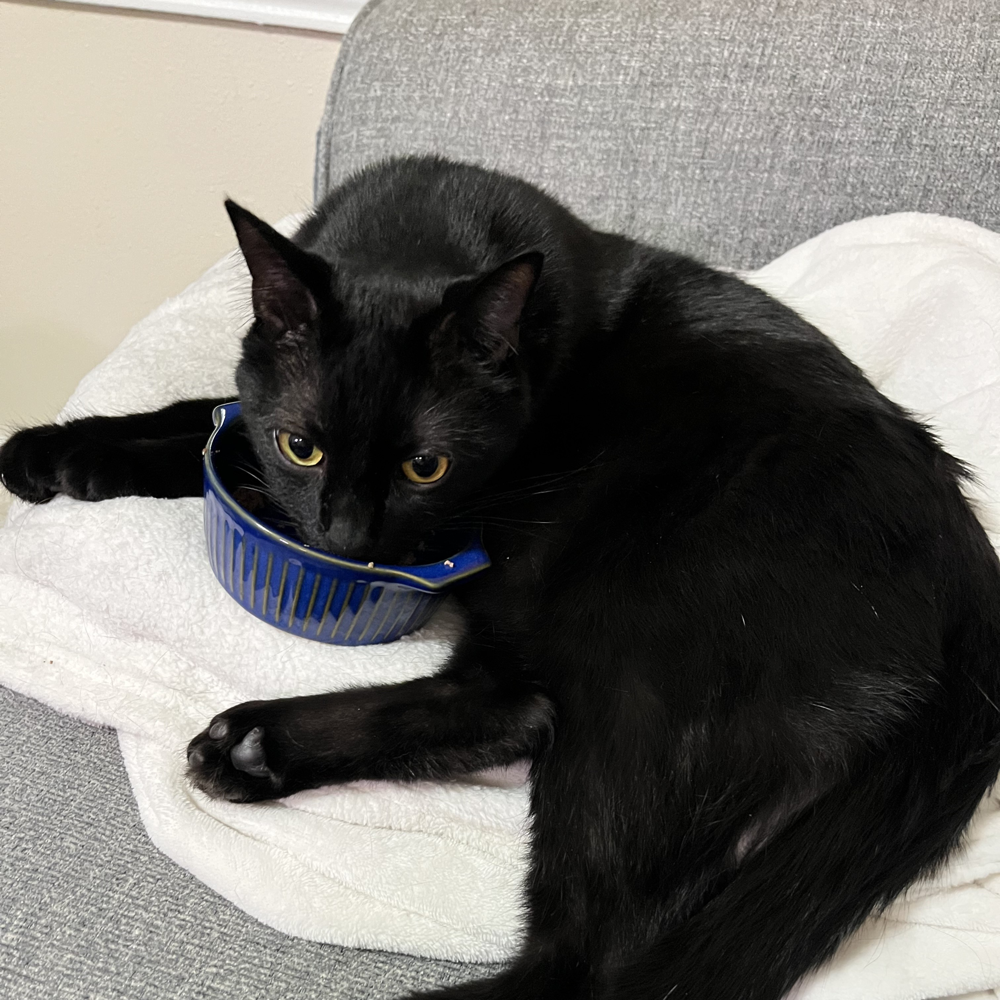

About Wen
My research focuses on how businesses navigate social changes and balance stakeholder needs while maintaining profitability. I'm drawn to questions around social movements, gender equality, and employee reactions such as turnover, satisfaction, and whistleblowing. There's a real gap between what firms intend through their actions and how employees actually interpret and respond to them. My work centers employees as agents: individuals who actively interpret what's happening around them (in their communities, their cultures, their workplaces) and make choices that, in aggregate, shape what a firm becomes.
My work has been recognized with Best Paper at the Academy of Management Annual Conference (2025), a finalist for the SMS PhD Paper Prize, and the PhD of the Year (OWLIES Award, 2025) at UT Dallas.






Outside of work, I'm always up for an adventure. I love traveling, wandering off onto a new hiking trail, and taking my time to explore somewhere new, often with my camera in hand. I also train in Taekwondo, which keeps me grounded and reminds me that growth usually comes with a few bruises.
I'm a proud cat parent (and yes, the cat runs the house and writes my papers). I care a lot about the people and communities around me, and I try to bring that same warmth into how I show up as a colleague and collaborator. I'm also a heavy metal and country music fan. Slipknot is my all-time favorite band! Abbey Cone is my favorite female classic country singer.